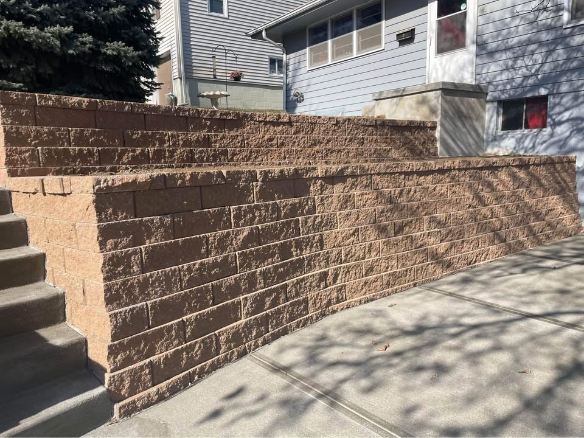

Sidewalk Installation
Explore access paths and walkway work around grade changes.
Retaining wall construction can help with grade changes, soil control, drainage, and property layout improvements. Call, text, or request a quote from the homepage for service details and availability.

A retaining wall is not just a visual feature. Water pressure, drainage planning, slope, and what the wall is actually holding back all affect whether the project works well over time.
Retaining wall projects can tie into patios, walkways, access paths, or broader yard layout changes. Looking at the surrounding concrete and grade conditions can make planning much easier.
Explore access paths and walkway work around grade changes.
Compare patio layouts that may tie into retaining work.
Review repair options if surrounding concrete has shifted or failed.